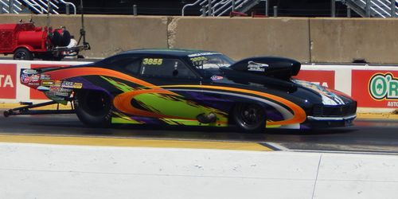

 I’m Eduardo Perez a First-Generation Latino College Student pursing a Bachelor of Science in Computer Engineering at Illinois Tech, and oldest of three siblings in a family of five. As expressed above, my areas of interest are cars, robotics, and Maker Spaces(Which are big DIY spaces). My interest in cars started by simply helping my Dad work his truck or on landscaping equipment before he had a stroke. Because of the stroke, he is no longer able to drive. This meant that his truck(Which is a 1996 Chevy Silverado 2500)had to parked in the garage until I was able to drive. A few years after I got my drivers license me, my brother, and my dad started working on the truck. Being in the garage for about 9 years, the fuel pump had to be replaced. After the pump was replaced, a new battery, 5 gallons of gas, and she started right up as if nothing happened. The sound of the small block v8 roaring again from sleeping put a simile on our faces. All 8 cylinders were firing and the transmission still worked! To me and my brother, we were surprised that it was still working after just sitting for a long period. But to my Dad, it was to no surprised as he was confident in his truck. After inspecting and fixing the truck through a year, we finally took it for a long drive. Aside from some body damage, the truck runs and drive. Driving my dad's truck brings old memories to me and my brother. Fixing the truck made me realize that I enjoy working with my hands and I gained an interest to pursue a path in the automotive industry. When it comes to robotics, I start geeking out. Watching NOVA and learning about the Mar's Rover during middle school, it fascinated me about NASA was able to control or program a robot to perform task on a different planet. But science fiction through different mediums such as video gaming(Titanfall 2), movies(The sound of the heavy metallic steps of an AT-AT), shows revealed on how creative we can get when designing robots whether for entertainment or helping the world. This may me want to pursue my education into engineering. I'm interested in Maker Spaces because I went to one called Pump Station One with a friend to work on a project for a club at my community College. He was member of the Maker Space and he showed me around the site. It amazed me of all the tools at the ready to be used to create stuff. The site had tools such for wood works, welding, 3D printing, laser cutters, electronics, and they even had an electron microscope (no longer there). While at the pump station one, everyone was welcoming and they helped each other working on their projects. I remember help someone cutting a transformer(electronic part) for parts to build his own speaker. Even though I wasn't a member, they invited everyone in the space to a big dinner to celebrate someone birthday. Through the celebration, I met others and learned about projects they were working. Having a site such as Pump Station One encourages anyone to create and learn new things
I transferred into Illinois Tech in Fall 2016 from Wilbur Wright Community College. Transitioning from a community college to a university took some getting used to. But I found SHPE-IIT and that's when I felt more welcomed to the university. I networked and made friends with those pursuing in the same major. Later, I became their Technical Officer on their board. Through SHPE-IIT, I They helped me broaden my vision into the engineering field and the pathways to pursue. In Spring 2018, I was invited invite into IIT's NASA Robotics Mining Team to work with the electrical team. I started out by making wire connections for sensors, troubleshooting connections of all electrical components of the mining robot. Being a part of the mining team, helped me get a better understanding as into what is the process like building a robot from scratch and the amount of work going into troubleshooting. I'm looking forward to build and go with the team to the mining competition in May 2019. While at IIT, I was emailed an invitation to visit Google's Chicago office to network with their engineers. This was one email I never expected. At the event, I meet with other students from different university in Chicago. Several things I learned from this event are: Never say that your an expert in a programming language(You'll never know who will interview you), Do online Coding challenges, and Read the book called "Cracking the Coding Interview" to prepare for programming positions. My plans after IIT are still in the thought process. But I want get a career in the automotive and/or robotics industry. I enjoy working with my hands as it allows me get a better understanding on how items function. If I pursue in the field of robotics, I'm interested in exoskeletons and hopefully work on mech suit. In the field of automotives, I'm interest in the performance. One personal goal of mine is to work with my brother on a project car. The car we had in mine is 1957 chevy 3200 truck and make a daily driver or a performance car.
I chose to enroll myself into this course because it centered on Front End Web Development. Currently, I'm the Technical Officer of SHPE-IIT and one of my task's is to manage and update their website. SHPE-IIT's website is shpeillinois.tech. Before enrolling into this class, I did teach myself some HTML and CSS, but I am not fluent in the language. When it comes to programming in general I was off and on learning them. At first, I would fine interest in a new language learn its basics, do some online coding challenges and then I would lose interest. Ironically, I find coding to be boring. The reason being is that I'm more of hands-on and visual person. When I started teaching myself HTML and CSS it was easier to understand compared to other programming languages. HTML serves as the structure and CSS serves as the appearance of the website. This is easier for me to see, as I know what I'm looking for and what to modify. When I uploaded the redesigned website for SHPE-IIT, I downloaded a free site template and modified it to the needs of SHPE. Although modifying it was fairly easy with some web development knowledge, this template is not my own. My primary ambition that I hope to gain from this course is to be able to build a website from scratch with my own coding.